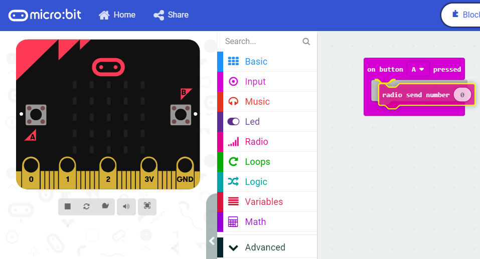
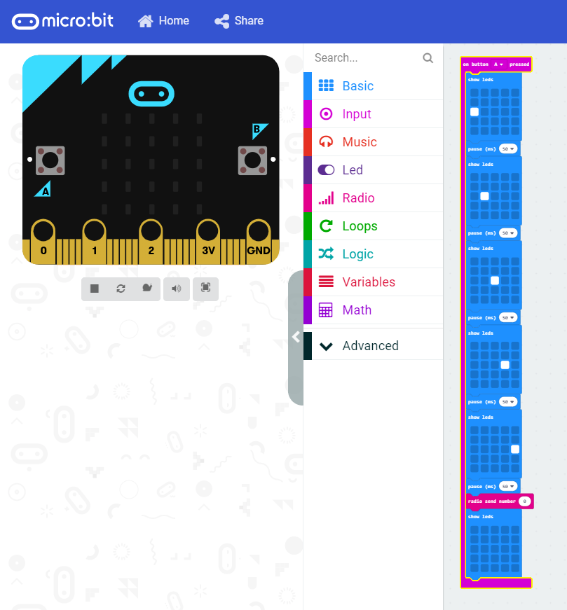

Hello! This tutorial will help you make a very simple BBC Micro:bit program. For this tutorial you'll need to grab a few friends, with a Micro:bit each. You'll each run a similar program, with minor diffrences. If you do it correctly, a small animation will scroll across each Micro:bit in a chain! This project uses very basic blocks, with the exception of the radio functions we will be using. For this project we will be using the 'Radio' function on the Micro:bits. Every Micro:bit is equipped with a radio transmitter and reciever, which can send strings of text and numbers. The first Micro:bit plays an animation then broadcasts '2' on its radio. It plays its animation then broadcasts '3', and so on.
Page 1 Page 2 Page 3
To start this project, make sure you are familiar with the Micro:bit; you can visit the Micro:bit basics lesson to help you with this. First, open a new Micro:bit editor.

The person who starts the program needs a trigger to start the animation. Under input, you will find the 'On button A pressed' block. Drag this over. You can delete the 'On start' and 'Forever' blocks as we won't be using them. Have a look at the blocks in the 'Radio' tab. We need to send numbers, so drag over 'Radio send number 0'.

Set the number in the 'Radio send number 0' block to 1. The final step for the first person is to create an animation. To do this, go to the 'Basic' tab. Select the 'Show leds' block, then a 'Pause (ms) 100' block. Set the pause block to 50, then repeat the process for as many frames as you want. Change the leds you want to show by clicking on the squares in the 'Show leds' block to turn them on and off. Below is a simple animation of a dot moving across the screen. When put together with other Micro:bits sporting the same animation, it would look like this dot travels across Micro:bits! Remember to set your Micro:bit's screen back to clear afterwards.

That's it! Name your code then download it. Select the arrow on the download then 'Show in folder'. Drag your program (you can see which one it is by looking for the one that is selected) over to your Micro:bit, then wait for it to download. Push 'A' and you will see your animation play! To add more Micro:bits in a chain, see the next page.